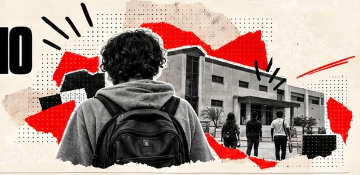
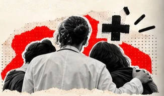
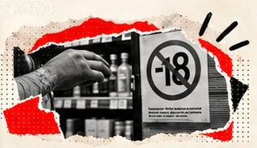
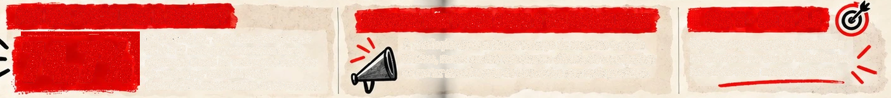

SOB EFEITO
PÁGINA 17
UMA RESPOSTA DO TAMANHO DO PROBLEMA
- ESCOLA
- SAÚDE
- DIREITOS
- OPORTUNIDADES
Quatro propostas da equipe para prevenir, cuidar e incluir.
1PERMANÊNCIA ESCOLAR
QUEM: escola e áreas de Educação,
Saúde e Assistência Social.
AÇÃO: localizar estudantes evadidos,
identificar barreiras ao retorno e garantir
acompanhamento, sem diagnosticar uso
de drogas apenas pela evasão.
COMO AVALIAR: retorno, frequência,
permanência e aprendizagem ao longo
do tempo.
2CUIDADO EM REDE
QUEM: atenção primária,
CAPS/CAPSi/CAPS AD e proteção
social, conforme idade e necessidade.
AÇÃO: plano individual articulando
saúde, família, documentação, moradia e
oportunidades; acolher sem condicionar
a primeira escuta à abstinência.
COMO AVALIAR: continuidade do
atendimento, redução de agravos e
acesso efetivo a direitos.
3RESPONSABILIDADESOBRE O MERCADO
QUEM: vigilâncias, órgãos de fiscalização
e autoridades competentes.
AÇÃO: fiscalizar venda/fornecimento
de álcool a menores e comércio proibido
de dispositivos eletrônicos para fumar,
além de atuar sobre publicidade e
disponibilidade.
COMO AVALIAR: monitorar fiscalização
e acesso real, não apenas o número
de multas.
4EXAMINAR A SELETIVIDADE
QUEM: órgãos de controle, Defensoria,
Ministério Público, Justiça e pesquisadores.
AÇÃO: acompanhar fundamentos da
classificação entre usuário e traficante
e os resultados das etapas do sistema.
COMO AVALIAR: comparar critérios e
resultados por raça, território e condição
social, respeitando a metodologia de
cada base.
POR QUE FISCALIZAR O ACESSO?
74,7%
No LENAD III, 74,7% dos adolescentes
de 14 a 17 anos que consumiam álcool
afirmaram nunca ter enfrentado restrição
de compra por causa da idade
(base de 394 entrevistados desse recorte).
RECURSOS NÃO PODEM PUNIR A VULNERABILIDADE
A avaliação deve orientar reforço de recursos e apoio
técnico, nunca excluir estudantes difíceis de acompanhar
ou cortar atendimento de territórios que mais precisam.
ODS 3 · META 3.5
Fortalecer prevenção e tratamento
relacionados ao uso de substâncias,
incluindo o uso nocivo do álcool.